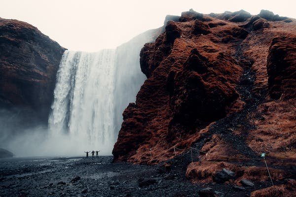

If your kind of vacation is a mountain getaway, then you are likely someone who enjoys the fresh air, breathtaking views, and the thrill of outdoor adventure. A mountain vacation can be both relaxing and invigorating, offering the opportunity to disconnect from the hustle and bustle of everyday life while also challenging yourself physically.
Whether you prefer hiking, skiing, or simply taking in the scenery, a mountain vacation can provide a sense of peace and tranquility that is hard to find elsewhere.
From cozy cabins to luxurious resorts, there are many options for a mountain vacation that can suit any budget or preference. So if you're looking for a way to recharge and connect with nature, a mountain vacation may be just what you need.
If you're someone who loves soaking up the sun and enjoying the soothing sound of the waves crashing against the shore, then a beach vacation is likely to be your ideal kind of getaway. There's something inherently relaxing and rejuvenating about being surrounded by the natural beauty of the beach, with its wide expanse of sand, clear blue waters, and breathtaking sunsets.
Whether you prefer lounging in a beach chair with a good book or indulging in water sports like swimming, surfing, or kayaking, there's plenty to keep you entertained at the beach. With a wide range of accommodation options, from cozy beachside cottages to luxurious oceanfront resorts, you can tailor your beach vacation to suit your specific preferences and budget. So, if you're looking to escape the hustle and bustle of daily life and unwind in a peaceful, serene environment, a beach vacation may be just what you need.

If you enjoy the journey as much as the destination, a road trip vacation might be the perfect choice for you. Road trips offer the flexibility to stop and explore wherever and whenever you want, and allow you to discover hidden gems and scenic routes that you might miss on other types of vacations. Whether you prefer to drive along the coast, through the mountains, or across the countryside, road trips provide a sense of adventure and freedom that can be hard to replicate in other travel experiences. With the right companions and some careful planning, a road trip vacation can be an unforgettable and unique way to explore the world.